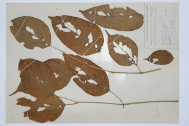
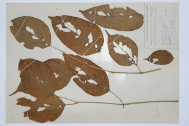

Tamil: Achi pana, Arandei, Paiyaralandai, Palaiyudaycci, Peiarlankei, Palagaipayani, Vangam. Malayalam: Palakapayyani, Payyazhantha, Valpathiri, Aralu. Kannada: Alangi, Bunepaale, Patagani, Sonepatta, Tattuna, Tigadu. English: Indian trumpet flower.
Bignonia indica L.
For. Fl. Burma 2: 237. 1877; Gamble, Fl. Madras 2: 994. 1993 (re. ed); Sasidharan, Biodiversity documentation for Kerala- Flowering Plants, part 6: 334. 2004; Keshava Murthy and Yoganarasimhan, Fl. Coorg (Kodagu) 321. 1990. Cook, Fl. Bombay 2. 327. 1902.
 
